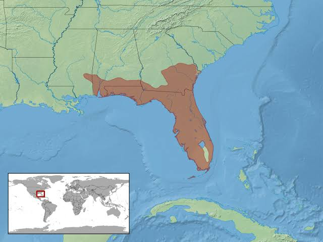

Indigo Snake
| Indigo Snake | |
|---|---|
| Kingdom: | Animalia |
| Phylum: | Chordata |
| Class: | Reptilia |
| Order: | Squamata |

The Indigo Snake is a non-venomous snake species found in the southeastern United States.
It is known for its striking blue-black coloration and is a popular subject for herpetologists.
Due to habitat loss and collection for the pet trade, the Indigo Snake is considered a species of concern.
| Diet and Weight |
|---|
The Indigo Snake feeds on many animals including venomous snakes, small mammals, and other reptiles.
They have a natural resistance to the venom of pit vipers like rattlesnakes, cottonmouths, and copperheads, which allows them to hunt dangerous prey safely
The weight of an adult Indigo Snake ranges from 1 to 2 pounds with a body length of 3 to 4 feet.

| Behaveral Habits |
|---|
The Indigo Snake is a solitary hunter, typically active during the day and resting at night.
They are known for their stealthy approach and ability to constrict their prey.
Indigo Snakes are also known for their docile nature and are sometimes kept as pets, although this is not recommended due to their size and specific care requirements.
| Conservation Status |
|---|
The Indigo Snake is listed as a species of concern on the "IUCN Red List of Threatened Species"; with a declining population trend.
Habitat loss and degradation, pollution, and collection for the pet trade are the main threats to their survival.
This decline is mainly due to habitat loss, illegal pet trading and over-pollution.
| Habitat and Range |
|---|
Indigo Snakes are found in the southeastern United States.
They prefer areas with dense vegetation and abundant food sources to live in.
The habitat of the Indigo Snake is threatened by deforestation and human encroachment.